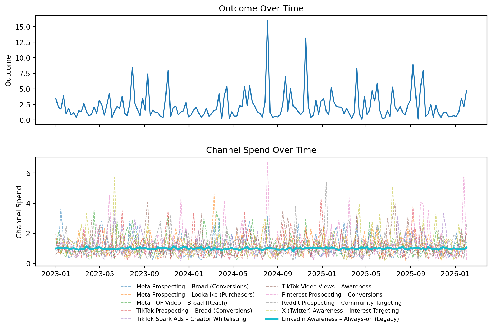
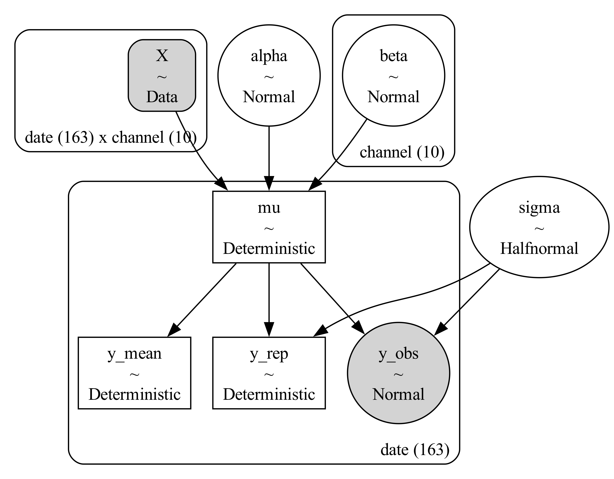
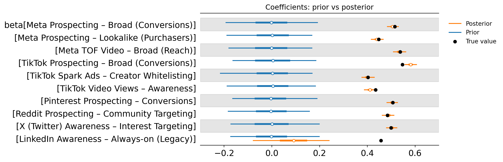
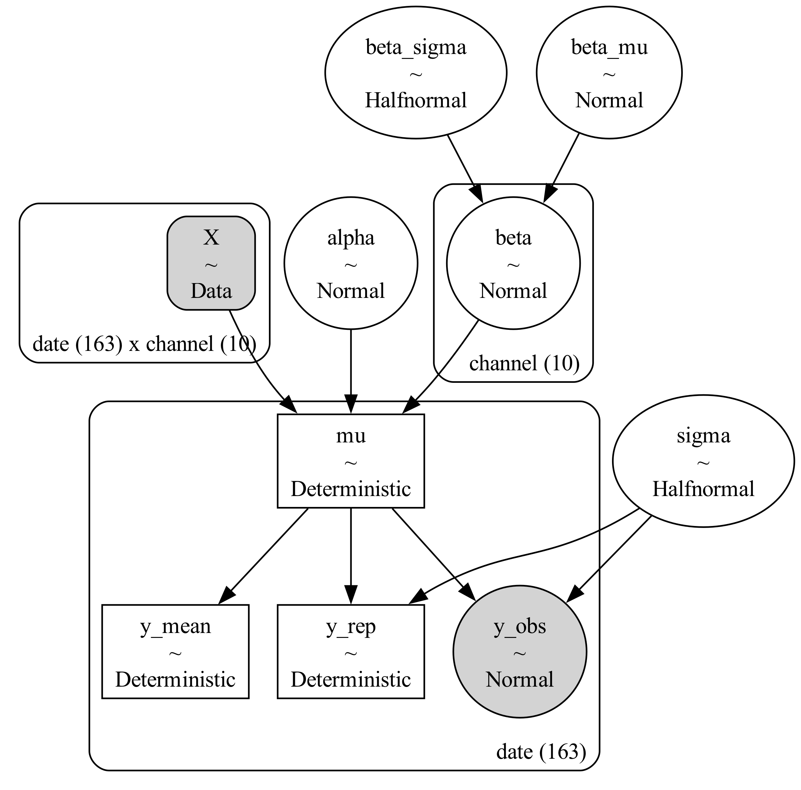
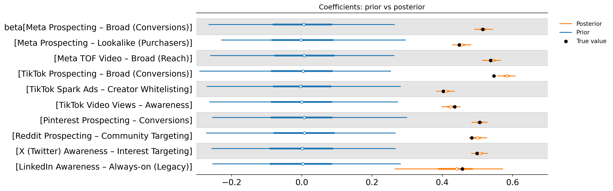
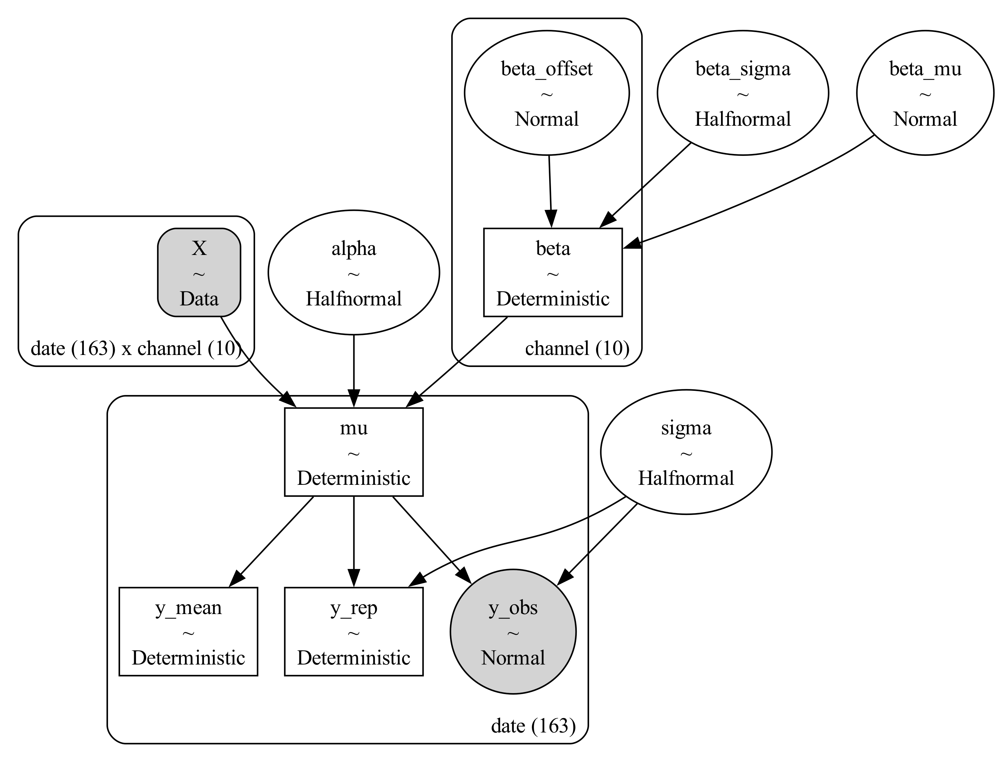
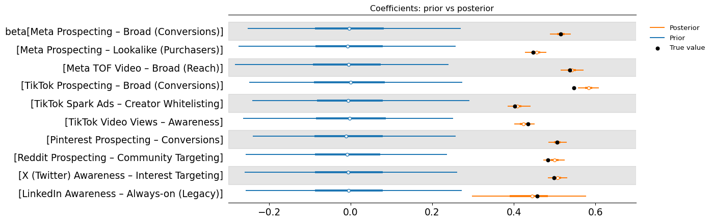
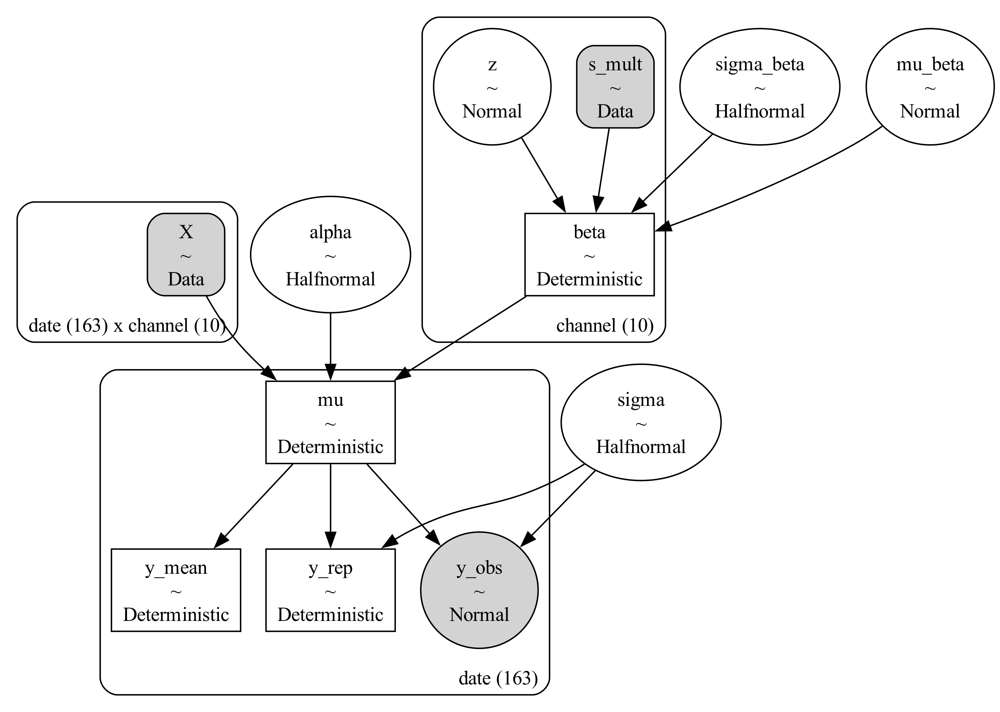
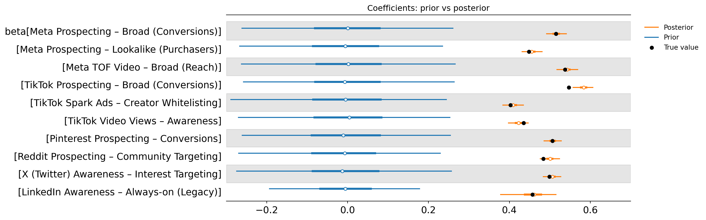
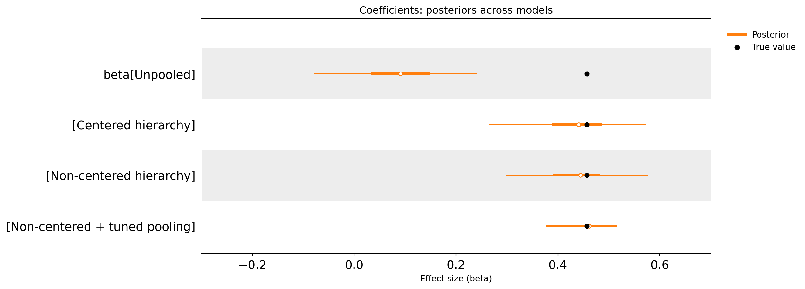

Improving Marketing Measurement with Hierarchical MMMs
A practical DTC example using Bayesian partial pooling in PyMC
Marketing Mix Models (MMMs) often produce one frustrating result:
A low-spend, always-on channel gets an ROI estimate that is either wildly uncertain or clearly implausible.
You’ve probably seen it in your own outputs. The big channels look reasonable, but then one smaller campaign (the one that’s been running quietly in the background for months) shows up with a huge uncertainty interval or a coefficient that just doesn’t pass the sniff test.
In this post, that channel is LinkedIn Awareness (Always-on): a low-budget paid social campaign that hasn’t had much strategic attention, experimentation, or meaningful budget movement. We’ll walk through why MMMs struggle with channels like this, and how hierarchical modelling can improve measurement by allowing weak channels to “borrow strength” from the rest of the mix.
Business context
Assume we work at a DTC subscription brand (think: skincare, supplements, meal kits). Each week we spend across a portfolio of paid social campaigns spanning platforms like Meta, TikTok, Pinterest, Reddit, X (Twitter), and LinkedIn.
Some campaigns are large and easy to estimate because they have meaningful spend variation and clear signal. Others are always-on and relatively flat.
In this example, LinkedIn Awareness (Always-on) is consistently active but has low spend, limited creative rotation, minimal targeting changes, and little week-to-week variation. Its impact may be real, but it’s often subtle and difficult to isolate from everything else happening in the business.
This creates a classic MMM failure mode:
The model is forced to estimate a channel effect using very little usable information.
A quick primer on hierarchical priors
Hierarchical priors are a way of telling the model that some parameters (like campaign effects) are related and should be learned together rather than independently. This allows weak or noisy channels to shrink towards the average effect of similar channels, instead of drifting towards extreme values driven by randomness. This only makes sense when the channels are genuinely comparable. In this post, all campaigns fall under the same broad paid social bucket.
Data Inspection
To keep this post focused on modelling behaviour (rather than the messiness of real-world attribution), we’ll use a synthetic dataset that resembles a simplified MMM.
The data represents a DTC subscription brand with weekly performance data over time. Each week includes an outcome variable (think conversions or revenue) alongside spend across a portfolio of paid social campaigns spanning platforms like Meta, TikTok, Pinterest, Reddit, X (Twitter), and LinkedIn.
Because the data is simulated, we know the true underlying coefficients used to generate the outcome. That gives us a rare advantage: we can directly evaluate whether each modelling approach is recovering the ground truth, and how uncertainty changes depending on the assumptions we make.
A key part of the setup is that LinkedIn Awareness (Always-on) is deliberately designed to be difficult to measure. It has low spend relative to the rest of the portfolio and, more importantly, it shows very little week-to-week variation. This is a common real-world pattern for always-on awareness campaigns, and it’s exactly the kind of situation where MMMs tend to produce unstable or overly uncertain estimates.
Unpooled Approach
We’ll start with the simplest possible MMM setup: an unpooled model.
In an unpooled model, each campaign is treated as having its own completely independent effect size. In other words, the model estimates a separate coefficient for every campaign, without assuming any shared structure or similarity between them. Each campaign’s posterior is learned entirely from the variation in that campaign’s spend and its relationship to the outcome.
This is a very common starting point in MMM because it is easy to interpret and aligns with the way many marketers naturally think about performance measurement: each campaign gets its own estimate, based only on its own data.
It also provides a useful baseline for comparison. Once we have an unpooled model, we can introduce hierarchy later and clearly see what changes when we allow campaigns to share information through partial pooling.
The model is a log-linear regression on the log of spend:
\[\log(y_t) = \alpha + \sum_j \beta_j \log(x_{j,t}) + \epsilon_t, \quad \epsilon_t \sim \mathcal{N}(0, \sigma)\]
With independent priors per channel:
\[\beta_j \sim \mathcal{N}(0, 0.1) \quad \text{(independent per channel)}\]

import pymc as pm
from pymc_extras.prior import Prior
coords = data["coords"]
X = data["X"]
y_obs = data["y_obs"]
with pm.Model(coords=coords) as unpooled_model:
Xd = pm.Data("X", X, dims=("date", "channel"))
alpha = Prior("Normal", mu=0.5, sigma=0.5).create_variable("alpha")
beta = Prior("Normal", mu=0.0, sigma=0.1, dims="channel").create_variable("beta")
sigma = Prior("HalfNormal", sigma=0.5).create_variable("sigma")
mu = pm.Deterministic("mu", alpha + pm.math.dot(Xd, beta), dims="date")
pm.Normal("y_obs", mu=mu, sigma=sigma, observed=y_obs, dims="date")
pm.Deterministic("y_mean", pm.math.exp(mu), dims="date")
pm.Deterministic("y_rep", pm.math.exp(mu + pm.Normal.dist(0.0, sigma)), dims="date")Interpreting the result
The forest plot below shows the prior vs posterior distribution of each campaign’s effect size, summarised with a point estimate and a 94% credible interval. In practical terms, this is the MMM’s estimate of how strongly each campaign contributes to the outcome, along with the uncertainty around that estimate.
For the larger campaigns, the credible intervals are relatively tight and the posterior is clearly separated from zero. This is what we hope to see: the model is finding enough signal in the data to produce a stable estimate.
For smaller campaigns, the intervals tend to widen noticeably. This reflects a simple reality of measurement: if a campaign has limited spend or limited variation over time, the model has fewer opportunities to observe how changes in spend relate to changes in the outcome. The result is a posterior distribution that is much less certain.
This is not necessarily a flaw in the model, it is the unpooled approach being honest about what the data can and cannot support. At this stage, the model is doing exactly what we asked: estimating each campaign independently, with no shared assumptions.

Centered Hierarchical Approach
Next, we introduce a hierarchical model using a centred parameterisation.
The key change is that we no longer treat each campaign coefficient as completely independent. Instead, we assume campaign effects are drawn from a shared distribution with a common mean and spread. In practical terms, this reflects a reasonable marketing belief: campaigns within the same paid social portfolio are different, but they are not totally unrelated.
This is often referred to as partial pooling. Campaigns with strong signal are still free to express their own distinct effect sizes, while campaigns with weaker signal are pulled towards the group average. This helps stabilise estimates and reduces the chance that weak campaigns end up with extreme values simply because the model is overfitting noise.
The centred parameterisation is the most direct way to express this hierarchy, and it provides a useful stepping stone before we move to the non-centred form.
\[\beta_j \sim \mathcal{N}(\mu_\beta, \sigma_\beta)\] \[\mu_\beta \sim \mathcal{N}(0, 0.1), \quad \sigma_\beta \sim \text{HalfNormal}(0.1)\]

Only the beta prior block changes:
# What changed (beta prior block):
beta = Prior(
"Normal",
mu=Prior("Normal", mu=0.0, sigma=0.1),
sigma=Prior("HalfNormal", sigma=0.1),
dims="channel",
).create_variable("beta")Interpreting the result
Compared to the unpooled model, the centred hierarchical model produces noticeably different posterior locations for several campaigns. This is an important observation: by introducing partial pooling, we’ve changed the assumptions of the model, and that often leads to meaningful shifts in where the posterior density sits.
However, the uncertainty for many campaigns remains relatively wide. In other words, the hierarchy has moved estimates towards more plausible values, but it hasn’t dramatically tightened the credible intervals.
That’s a useful reminder of what hierarchical modelling can and cannot do. Pooling helps the model make better use of shared structure across campaigns, but it doesn’t magically create new information. If a campaign is consistently low-spend and shows little variation over time, the data still limits how confident the model can be.
At this stage, the hierarchy is improving the stability of the estimates more than it is reducing uncertainty. The next step is to reparameterise the same hierarchical model in a way that tends to behave better when the signal is weak.

Non-centred Hierarchical Approach
Next, we fit the same hierarchical model using a non-centred parameterisation.
This is still the same underlying idea as before: campaign effects are assumed to come from a shared distribution, and weak campaigns are partially pooled towards the group average. What changes is how the hierarchy is expressed, and that can matter depending on both the data and our expectations about how similar campaigns really are.
\[z_j \sim \mathcal{N}(0, 1), \quad \beta_j = \mu_\beta + \sigma_\beta \cdot z_j\]

Only the beta prior block changes:
# What changed (beta prior block):
beta = Prior(
"Normal",
mu=Prior("Normal", mu=0.0, sigma=0.1),
sigma=Prior("HalfNormal", sigma=0.1),
dims="channel",
centered=False,
).create_variable("beta")Interpreting the result
The non-centred hierarchical model typically produces similar overall posterior behaviour to the centred model.
In terms of results, we again see meaningful movement in the location of some campaign effects compared to the unpooled baseline. The posterior estimates are more consistent with the idea that these campaigns belong to the same paid social portfolio and should not behave like completely independent outliers unless the data strongly supports it.
At the same time, uncertainty remains present for the weakest campaigns. This is expected. Hierarchical modelling improves estimation by borrowing strength, but it does not remove the fundamental limitation that low-variation campaigns provide less identifiable information.

Tuned Non-centred Hierarchical Approach
So far, we’ve introduced partial pooling and improved the stability of our estimates by treating campaign effects as coming from a shared distribution. In this final step, we add a practical extension: a way to tune the strength of the hierarchy.
In many MMM applications, the default hierarchical model learns how much pooling to apply based purely on the data. That is often reasonable, but there are cases where we may want more control. For example, we might believe that certain campaigns should be treated as highly comparable (strong pooling), while others should be allowed more independence (weak pooling).
To demonstrate this idea, we introduce a multiplier into the non-centred hierarchy. Conceptually, this gives us a “dial” that controls how much each channel is allowed to deviate from the group-level mean. Smaller values increase shrinkage towards the group mean, while larger values allow more channel-specific freedom.
This creates a flexible framework: we still benefit from hierarchical structure, but we also gain a way to encode business judgement about which channels should be pooled tightly and which should be treated more cautiously.
\[\beta_j = \mu_\beta + \sigma_\beta \cdot s_j \cdot z_j\]
where \(z_j \sim \mathcal{N}(0, 1)\) and \(s_j\) is a channel-specific multiplier that controls how strongly channel \(j\) is allowed to deviate from the group mean.

Intuitively:
If \(s_j < 1\), the channel is more strongly pooled towards \(\mu_\beta\). The posterior is encouraged to stay closer to the group-level average unless the data provides strong evidence otherwise. This is useful for low-signal channels where we want more conservative estimates.
If \(s_j = 1\), we recover the standard non-centred hierarchical model. The amount of pooling is driven entirely by the learned group-level variance \(\sigma_\beta\).
If \(s_j > 1\), the channel is less pooled (more independent). The model allows that channel’s effect to spread further away from \(\mu_\beta\), increasing flexibility but also increasing uncertainty. This can be useful when we believe a channel is structurally different from the rest of the group.
In this example, we might set something like \(s_{\text{LinkedIn}} = 0.05\) to reflect the belief that LinkedIn Awareness should behave similarly to the rest of the paid social portfolio, but is too weakly identified to estimate reliably without stronger shrinkage.
Only the beta prior block changes:
# What changed (beta prior block):
mu_beta = Prior("Normal", mu=0.0, sigma=0.1).create_variable("mu_beta")
sigma_beta = Prior("HalfNormal", sigma=0.1).create_variable("sigma_beta")
z = Prior("Normal", mu=0.0, sigma=1.0, dims="channel").create_variable("z")
channels = np.asarray(coords["channel"])
s_mult = pm.Data("s_mult", np.where(channels == "c10", 0.05, 1.0), dims="channel")
beta = pm.Deterministic("beta", mu_beta + sigma_beta * s_mult * z, dims="channel")Interpreting the result
The tuned hierarchical model highlights an important practical point: good MMM measurement is often about balancing what the data is saying with what makes sense from a business perspective.
By introducing a tuning parameter, we can control how strongly campaign effects are pulled towards the group average. With stronger pooling, the model becomes more conservative and produces more stable estimates that are less likely to swing wildly due to noise. With weaker pooling, the model gives each campaign more freedom to behave independently, but uncertainty typically increases, especially for low-signal campaigns.
In this case, tuning has a noticeable impact on the posterior distribution for LinkedIn Awareness (Always-on). This is exactly the kind of channel where the data alone may struggle to provide a clean signal, so the strength of pooling meaningfully shapes the final estimate.
This also exposes one of the biggest weaknesses of many “black-box” MMM solutions. If the pooling assumptions are hidden, the model can appear confident or decisive without it being clear whether that confidence comes from the data or from strong structural assumptions baked into the model. Having the ability to tune and inspect pooling behaviour makes the modelling process far more transparent and controllable.
From a measurement perspective, this flexibility is valuable. It gives us a practical way to encode reasonable expectations about campaign similarity, while still allowing the model to surface real differences when the data supports them.

Comparing all approaches
At this point we’ve seen four different ways of estimating the same set of campaign effects, using the same underlying dataset. The difference is not the data, it’s the assumptions we allow the model to make.
This comparison is where hierarchical modelling becomes most intuitive. The unpooled approach treats every campaign as completely independent, which is a clean baseline but often leads to unstable estimates for smaller or low-variation campaigns. The hierarchical approaches introduce the idea that these campaigns belong to the same paid social portfolio, and therefore their effects should live in a similar range unless the data strongly suggests otherwise.
The plot below summarises the key takeaway: even though the credible intervals may remain wide for difficult-to-measure campaigns, the hierarchical approaches tend to produce posteriors that are more stable, more realistic, and more aligned with how marketers actually think about campaign performance. Rather than allowing weak channels to drift towards extreme values, the hierarchy pulls them back towards the broader pattern of the portfolio.
This is also a useful reminder that MMM results are never purely “what the data says.” They are always a combination of data and assumptions. Comparing these models side-by-side makes those assumptions visible, and helps clarify which approach produces estimates that are most useful for decision-making.
In practice, the goal is not to eliminate uncertainty, it’s to make uncertainty behave sensibly. A good MMM should produce outputs that are credible enough to act on, while still being honest about where the data is weak.

Quantitative summary
To complement the visual comparison, we can also summarise the results numerically. The table below reports the point estimate for each approach, the percentage difference between that estimate and the known true value, and whether the true value falls inside the credible interval (coverage). This provides a simple way to compare accuracy and calibration across the different modelling assumptions.
| Model | Point estimate | True value | Point est. % diff | Coverage | |
|---|---|---|---|---|---|
| 0 | Unpooled | 0.0901 | 0.4573 | -80.29% | No |
| 1 | Centred hierarchy | 0.4312 | 0.4573 | -5.71% | Yes |
| 2 | Non-centred hierarchy | 0.4344 | 0.4573 | -5.01% | Yes |
| 3 | Non-centred + tuned pooling | 0.4535 | 0.4573 | -0.84% | Yes |
Coverage indicates whether the 94% HDI contains the true value.
Conclusion
This example highlights a common reality in MMM: some campaigns are simply hard to measure in isolation. Always-on awareness spend, low-budget channels, and low-variation campaigns often contain too little identifiable signal for an unpooled model to produce stable, decision-ready estimates. In those cases, the model isn’t necessarily “wrong” it’s being honest about what the data can support.
Hierarchical modelling offers a practical way forward. By treating campaigns as part of a shared portfolio, we can borrow strength across similar channels and produce estimates that are often more stable and more aligned with business intuition, without pretending uncertainty doesn’t exist. The flexibility to tune pooling strength is especially important, and it exposes a major weakness of many black-box MMM solutions: if the structural assumptions are hidden, it becomes unclear whether confidence is coming from the data or from aggressive shrinkage baked into the model. The good news is that hierarchical approaches are relatively straightforward to implement in PyMC, and they provide a transparent framework for balancing data-driven insights with sensible modelling assumptions grounded in how marketing actually works.
Key take-home: MMM isn’t just about fitting the data: it’s about combining evidence with reasonable business assumptions, and hierarchical priors are one of the most practical tools for making weak channel measurement more stable and usable.